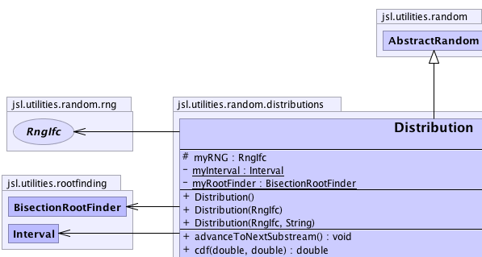
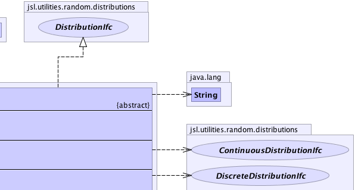
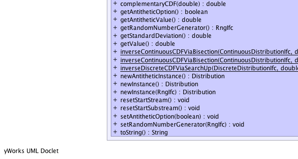
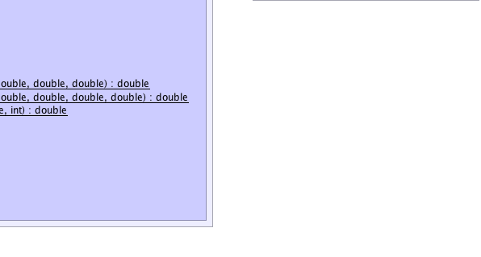

jsl.utilities.random.AbstractRandom
jsl.utilities.random.distributions.Distribution
jsl.utilities.random.AbstractRandom
jsl.utilities.random.distributions.Distribution
|
||||||||||
| PREV CLASS NEXT CLASS | FRAMES NO FRAMES | |||||||||
| SUMMARY: NESTED | FIELD | CONSTR | METHOD | DETAIL: FIELD | CONSTR | METHOD | |||||||||
java.lang.Object
public abstract class Distribution
An Distribution provides a skeletal implementation for classes that must implement the DistributionIfc. This class is an abstract class. Subclasses must provide concrete implementations. A Distribution generates random variates via its getValue() method. Remarks: 1) Each Distribution that is created, instantiates its own reference to an object that implements the RngIfc. By default this is an instance of RngStream. The user can provide their own RngIfc using the setRandomNumberGenerator() method. Subclasses can use this reference to assist with random variate generation
|  |  |
|  |  |
| Nested Class Summary |
|---|
| Nested classes/interfaces inherited from class jsl.utilities.random.AbstractRandom |
|---|
AbstractRandom.RandomControls |
| Field Summary | |
|---|---|
private static Interval |
myInterval
|
protected RngIfc |
myRNG
myRNG provides a reference to the underlying stream of random numbers |
private static BisectionRootFinder |
myRootFinder
|
| Fields inherited from class jsl.utilities.random.AbstractRandom |
|---|
myId, myName |
| Constructor Summary | |
|---|---|
Distribution()
|
|
Distribution(RngIfc rng)
Constructs a probability distribution using the supplied RngIfc |
|
Distribution(RngIfc rng,
java.lang.String name)
Constructs a probability distribution using the supplied RngIfc |
|
| Method Summary | |
|---|---|
void |
advanceToNextSubstream()
Positions the RNG at the beginning of its next substream |
double |
cdf(double x1,
double x2)
Returns the Pr{x1<=X<=x2} for the distribution |
double |
complementaryCDF(double x)
Computes the complementary cumulative probability distribution function for given value of x |
boolean |
getAntitheticOption()
|
double |
getAntitheticValue()
Returns the antithetic of the last getValue() If getValue() has never been called then returns Double.NaN |
RngIfc |
getRandomNumberGenerator()
Returns the underlying random number generator |
double |
getStandardDeviation()
Returns the standard deviation for the probability distribution as the square root of the variance if it exists |
double |
getValue()
This method simply returns the value. |
static double |
inverseContinuousCDFViaBisection(ContinuousDistributionIfc cdf,
double p,
double ll,
double ul)
Computes the inverse CDF by using the bisection method [ll,ul] must contain the desired value. |
static double |
inverseContinuousCDFViaBisection(ContinuousDistributionIfc cdf,
double p,
double ll,
double ul,
double initialX)
Computes the inverse CDF by using the bisection method [ll,ul] must contain the desired value [ll, ul] are defined on the domain of the CDF, i.e. the x values |
static double |
inverseDiscreteCDFViaSearchUp(DiscreteDistributionIfc df,
double p,
int start)
Searches starting at the value start until the CDF > p "start" must be the smallest possible value for the range of the CDF as an integer. |
abstract Distribution |
newAntitheticInstance()
Returns a new instance that will supply values based on antithetic U(0,1) when compared to this distribution |
abstract Distribution |
newInstance()
Returns a new instance of the random source with the same parameters but an independent generator |
abstract Distribution |
newInstance(RngIfc rng)
Returns a new instance of the random source with the same parameters with the supplied RngIfc |
void |
resetStartStream()
The resetStartStream method will position the RNG at the beginning of its stream. |
void |
resetStartSubstream()
Resets the position of the RNG at the start of the current substream |
void |
setAntitheticOption(boolean flag)
Tells the stream to start producing antithetic variates |
void |
setRandomNumberGenerator(RngIfc rng)
Sets the underlying random number generator for the distribution Throws a NullPointerException if rng is null |
java.lang.String |
toString()
Returns a string describing the distribution |
| Methods inherited from class jsl.utilities.random.AbstractRandom |
|---|
getId, getName, getSample, getSample, makeControls, setControls, setId, setName |
| Methods inherited from class java.lang.Object |
|---|
clone, equals, finalize, getClass, hashCode, notify, notifyAll, wait, wait, wait |
| Methods inherited from interface jsl.utilities.random.SampleIfc |
|---|
getSample, getSample |
| Methods inherited from interface jsl.utilities.random.distributions.CDFIfc |
|---|
cdf, invCDF |
| Methods inherited from interface jsl.utilities.random.ParametersIfc |
|---|
getParameters, setParameters |
| Methods inherited from interface jsl.utilities.random.distributions.MeanIfc |
|---|
getMean |
| Methods inherited from interface jsl.utilities.random.distributions.VarianceIfc |
|---|
getVariance |
| Field Detail |
|---|
private static BisectionRootFinder myRootFinder
private static Interval myInterval
protected RngIfc myRNG
| Constructor Detail |
|---|
public Distribution()
public Distribution(RngIfc rng)
rng - class that implements the RngIfc @returns a valid Distribution
public Distribution(RngIfc rng,
java.lang.String name)
rng - a class that implements the RngIfcname - a String name @returns a valid Distribution| Method Detail |
|---|
public double cdf(double x1,
double x2)
CDFIfc
cdf in interface CDFIfcx1 - a double representing the lower limitx2 - a double representing the upper limit
public double complementaryCDF(double x)
CDFIfc
complementaryCDF in interface CDFIfcx - The value to be evaluated
public double getAntitheticValue()
public double getValue()
GetValueIfc
getValue in interface GetValueIfcpublic final double getStandardDeviation()
VarianceIfc
getStandardDeviation in interface VarianceIfcpublic void advanceToNextSubstream()
RandomStreamIfc
advanceToNextSubstream in interface RandomStreamIfcpublic void resetStartStream()
RandomStreamIfc
resetStartStream in interface RandomStreamIfcpublic void resetStartSubstream()
RandomStreamIfc
resetStartSubstream in interface RandomStreamIfcpublic void setAntitheticOption(boolean flag)
RandomStreamIfc
setAntitheticOption in interface RandomStreamIfcflag - true means that it produces antithetic variates.public boolean getAntitheticOption()
getAntitheticOption in interface RandomStreamIfcpublic abstract Distribution newInstance()
newInstance in interface NewInstanceIfcnewInstance in interface RandomIfcpublic abstract Distribution newInstance(RngIfc rng)
newInstance in interface RandomIfcrng -
public abstract Distribution newAntitheticInstance()
public RngIfc getRandomNumberGenerator()
DistributionIfc
getRandomNumberGenerator in interface DistributionIfcpublic final void setRandomNumberGenerator(RngIfc rng)
rng - the reference to the random number generatorpublic java.lang.String toString()
toString in class java.lang.Object
public static double inverseContinuousCDFViaBisection(ContinuousDistributionIfc cdf,
double p,
double ll,
double ul)
cdf - p - must be in [0,1]ll - lower limit of search range, must be < ulul - upper limit of search range, must be > ll
public static double inverseContinuousCDFViaBisection(ContinuousDistributionIfc cdf,
double p,
double ll,
double ul,
double initialX)
cdf - p - must be in [0,1]ll - lower limit of search range, must be < ulul - upper limit of search range, must be > llinitialX - an initial starting point that must be in [ll,ul]
public static double inverseDiscreteCDFViaSearchUp(DiscreteDistributionIfc df,
double p,
int start)
df - p - start -
|
||||||||||
| PREV CLASS NEXT CLASS | FRAMES NO FRAMES | |||||||||
| SUMMARY: NESTED | FIELD | CONSTR | METHOD | DETAIL: FIELD | CONSTR | METHOD | |||||||||